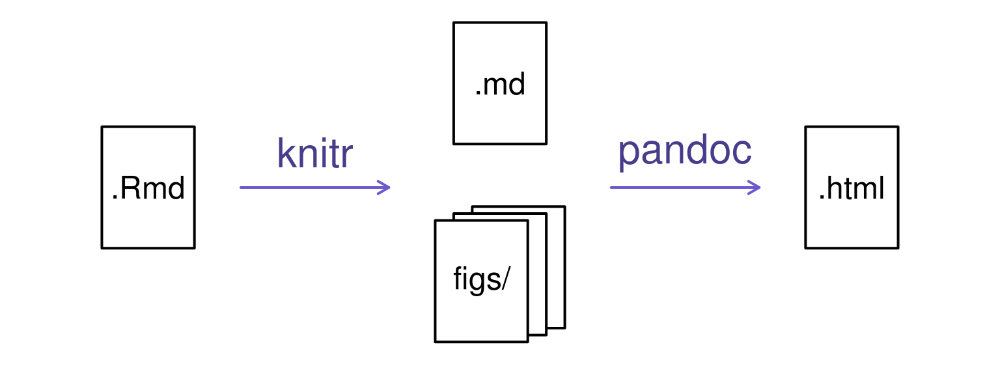

Reportes dinámicos con knitr
Luciano Selzer
28 June, 2018
Reportes de análisis de datos
Cuando analizamos los datos queremos compartir nuestros resultados con nuestros colaboradores.
Resulta tedioso copiar y pegar los resultados.
Y saber que figura es cual. O que resultados corresponde a que análisis
Programación Literaria
Propuesta en 1970 por Donald Knuth
La idea detrás de eso es poder escribir texto y mezclarlo con el resultado del código de computadora.
En R existe el paquete knitr que permite hacer eso: mezclar texto con código de forma de producir tablas, análisis y figuras.
Pero knitr no permite formatear el texto
- Para eso está R Markdown
Creando un archivo de R Markdown
Dentro de RStudio, click File → New File → R Markdown y vas a ver un dialogo como este:

Podemos quedarnos con la opción por defecto (HTML output), pero le damos un título.
Componentes básicos de R Markdown
El fragmento inicial instrucciones para R: el título, autor, fecha, y que formato va a tener el documento.
---
title: "Documento de R Markdown Inicial"
author: "Luciano Selzer"
date: "23 de septiembre, 2015"
output: html_document
---Se pueden borrar los campos que no querés. Las comillas dobles no son estrictamente necesarias. Solo si hay alguna comilla simple.
RStudio crea el documento con ejemplos para empezar. Los fragmentos de código tienen la estructura parecida a la de abajo.
```{r}
summary(cars)
```
Estos fragmentos de código van a ser ejecutados por knitr y reemplazados por sus resultados.
También hay una dirección web entre corchetes angulares (< >) como también doble asteriscos en **Knit**. Esto es Markdown.
Markdown
Es un sistema para escribir páginas web en formato liviano. En vez de código html se marca el texto con marcas que luego se convierten en código html válido.
Por ahora, borremos todos y veamos como se puede formatear el texto con markdown.
Podes poner el texto en:
| formato | código |
|---|---|
| negrita | **negrita** |
__negrita__ |
|
| italica | *italica* |
_italica_ |
|
~~tachado~~ |
Podemos hacer una lista con viñetas
* negrita con asteriscos dobles
* italica con guiones bajos
* código con comillas hacia atrás (backticks)o así:
- negrita con asteriscos dobles
- italica con guiones bajos
- código con comillas hacia atrás (backticks)O también así:
+ negrita con asteriscos dobles
+ italica con guiones bajos
+ código con comillas hacia atrás (backticks)Cada una da el mismo resultado
- negrita con asteriscos dobles
- italica con guiones bajos
- código con comillas hacia atrás (backticks)
Se puede usar una lista numerada usando solo número y ni siquiera hay que poner numeros consecutivos:
1. negrita con asteriscos dobles
1. italica con guiones bajos
1. código con comillas hacia atrás (backticks)Esto aparece como:
- negrita con asteriscos dobles
- italica con guiones bajos
- código con comillas hacia atrás (backticks)
Podes hacer titulos de sección de diferentes tamaños iniciando una linea con algún número de simbolos #:
# Título
## Sección principal
### Sub-sección
#### Sub-sub secciónTítulo
Sección principal
Sub-sección
Sub-sub sección
Podés compilar el archivo R Markdown a una página html haciendo click en “Knit HTML” arriba a la izquierda.
Hay una referencia rápida en el menú de Help
Ejercicio 1
Crea un nuevo documento de R Markdown. Borra todo su contenido y escribe algo en Markdown (alguna secciones, negrita, italicas y una lista con viñetas).
Luego convierte el documento en una página web.
Un poco más de markdown
Podés mostrar un hipervínculo así:
[texto a mostar](http://el-sitio-web.com).
Podés incluir una imagen así: 
Podés poner subíndices (e.g., F2) con F~2~ y superíndices (e.g., F2) con F^2^.
Sí sabés escribir ecuaciones con LaTeX, podes usar $ $ y $$ $$ para insertar ecuaciones como $E = mc^2$ \(E = mc^2\) y
$$y = \mu + \sum_{i=1}^p \beta_i x_i + \epsilon$$\[y = \mu + \sum_{i=1}^p \beta_i x_i + \epsilon\]
Hay editores online https://www.codecogs.com/latex/eqneditor.php
Fragmentos de código de R
El verdadero poder viene al mezclar markdown y fragmentos de código de R. Esto es R Markdown. Cuando se compile el documento se va a ejectuar el código y luego se van a insertar los resultados del código (figuras, tablas, etc.)
Un fragmento de código se ve así:
```{r load_data}
gapminder <- read.csv("~/data/gapminder.csv")
```
Pones el código de R entre ```{r nombre_fragmento} y ```.
Es buena idea darle un nombre a cada código, te ayudará a arreglar errores, y el nombre de los gráficos estarán basados en el nombre del fragmento que los produjo.
Ejercicio 2
Añade fragmentos de código para
- cargar el paquete ggplot2
- leer los datos de gapminder
- crear un gráfico
Como se compila

Cuando presionas el botón “Knit HTML”, el doumento de R Markdown es procesado por knitr y se produce un archivo de texto plano de Markdown (potencialmente también unos archivos de figuras): el código de R se ejecuta y se reemplaza tanto la entrada como la salida; si se producen figuras, se inserta el vínculo hacia ellas.
El documento de Markdown y las figuras son luego procesadas por la herramienta pandoc, que convierte el documento Markdown en HTML con las figuras incrustadas
Opciones de fragmentos
Hay una gran variedad de opciones que afectan como se trata el código dentro de los fragmentos.
- Usa
echo=FALSEpara evitar que se muestre el código. - Usa
results="hide"para evitar que se muestre el resultado. - Usa
eval=FALSEpara mostrar el código pero no evaluarlo. - Usa
warning=FALSEymessage=FALSEpara esconder las advertencias y mensajes. - Usa
fig.heightyfig.widthpara controlar el tamaño de la figuras (en pulgadas)
Entonces podrías escribir:
```{r cargar_paquetes, echo=FALSE, message=FALSE}
library(dplyr)
library(ggplot2)
```
Muchas veces vas a querer usar algunas opciones en todos los fragmentos. Para esto, podés configurar opciones globales:
```{r global_options, echo=FALSE}
knitr::opts_chunk$set(fig.path="Figs/",
message=FALSE,
warning=FALSE,
echo=FALSE,
results="hide",
fig.width=11)
```
La opción de fig.path define donde van a ser guardadas las figuras. La / es muy importante, sin ellas las figuras se guardarían en el lugar normal pero con el nombre que empieza con Figs.
Si tenés muchos archivos de R Markdown, podrías usar fig.path para definir distintos prefijos a los nombres de las figuras, como fig.path="Figs/cleaning-" y fig.path="Figs/analysis-".
Ejercicio 3
Usa las opciones de fragmentos para controlar el tamaño de una figura y esconder el código que la genera.
Código de R en linea
Podés hacer cada número en tu reporte reproducible.
Usa:
`r y `
para fragmento de código en línea, así: `r round(algun_valor, 2)`. El código va a ser ejectuado y reemplazado con el valor del resultado.
No dejes que los fragmentos en línea se separen entre línas
A veces podrías preceder un párrafo con un fragmento largo que haga todos los calculos y defina cosas; con include=FALSE para el framento mayor (que es equivalente a echo=FALSE y results="hide").
Pueden usar la función sprint() para redonder hasta un decimal sin perder decimales (e.g. sprintf("%.1f", -2.03) -2.0)
Ejercicio 4
Prueba agregar código de R en línea
Otras opciones de salida
Podés convertir los archivos de R Markdown en:
- Word
- Presentaciones
Haciendo clic en la flecha hacia abajo al lado de Knit HTML. También podés cambiar el tipo de salida especificando pdf_document o word_document en el encabezado del documento.
Tip: Creando documentos PDF
Crear documentos .pdf puede requerir la instalación de software extra. Si es requerido se detalla en un mensaje de error.
Tex para Windows está disponible aquí.
Tex para Mac está disponible aquí.